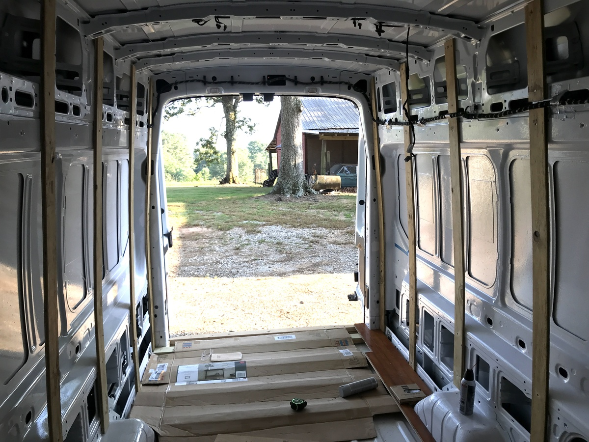
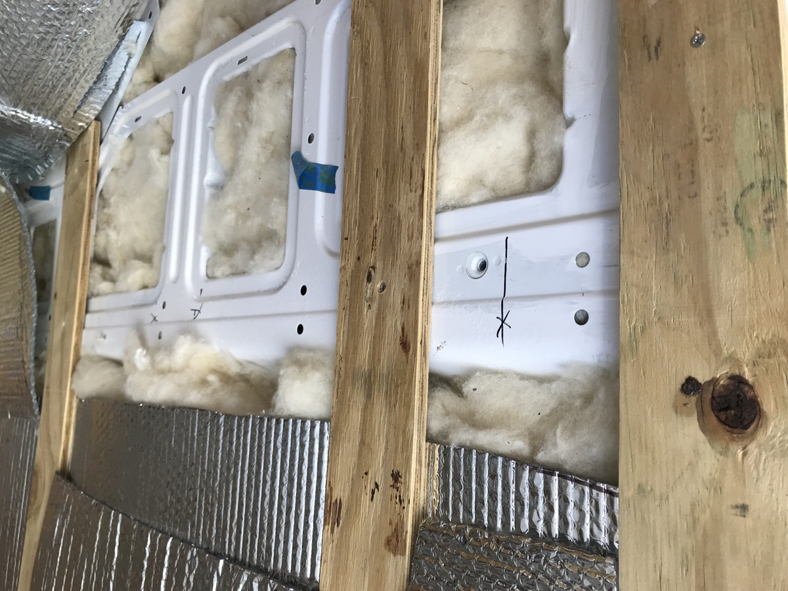
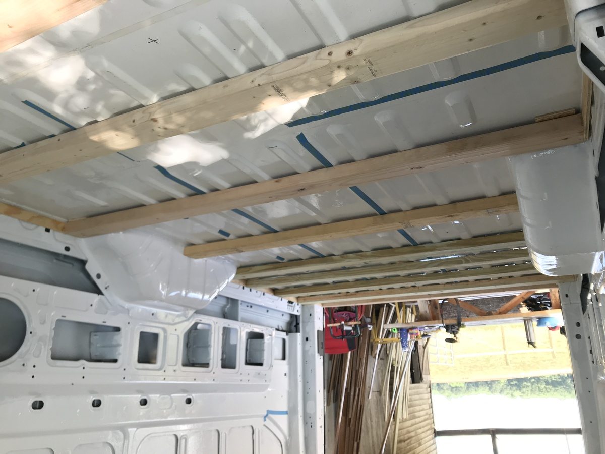
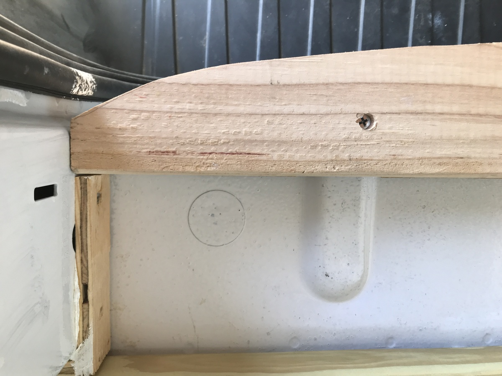
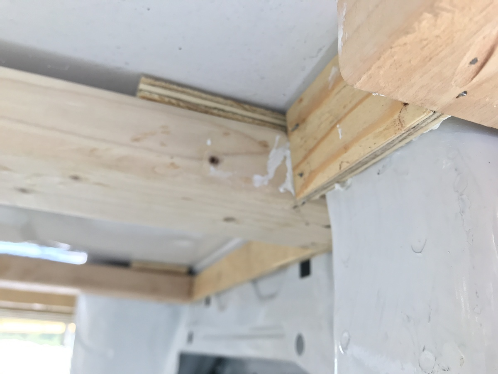
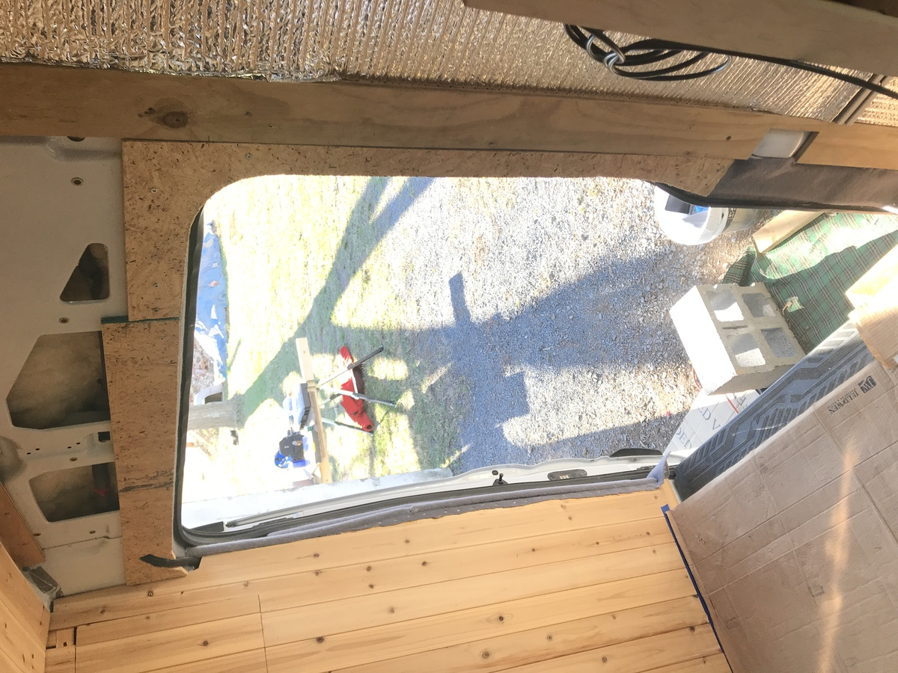
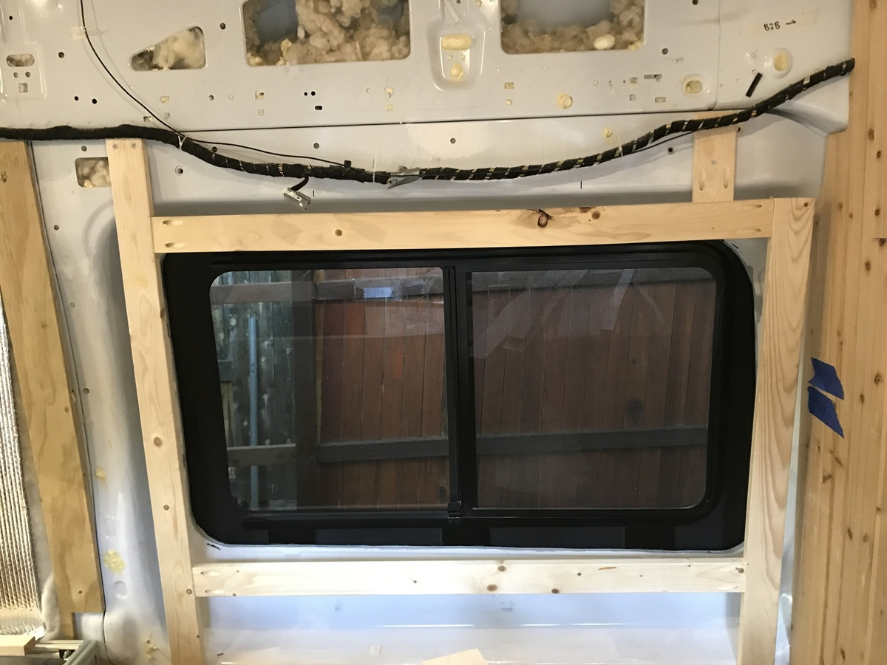

→ Insulation and Framing
Summary
- wall furring strips: 1/2” treated ply strips (3” wide) were fastened to the van body with sheet metal screws
- floor joists: 2x4’s were laid out 18” on center apart (then hardwood-floors were installed over these)
- in thicker areas where screws wouldn’t penetrate, rivet nits were used
- insulation: wool made for building insulation (havelock wool) was used -
- insulation - radiant barrier: Reflectix
- insulation - moisture barrier: none (chose the moisture absorbing properties of wool for this reason)
No moisture barrier was installed due to the difficulty of getting a moisture barrier fully sealed around all the contours of the van. To combat this, wool was chosen for its moisture-absorbing properties.
Design
Insulation
Wool was chosen specifically for the ability to naturally absorb moisture, and as a natural product (although 3M Thinsulate or spray foam are also good alternatives); this is used for both the floor and the walls (for the walls using an adhesive spray).
Moisture and Radiant Barriers:
Commonly home builders include an air sealing membrane, on the interior side of the insulation (or combined with, in the case of spray foam), which prevents the circulation of air, and hence moisture, between the inside and out. A radiant heat barrier can also be provided to reflect radiant heat (see the Reflectix image below).
Moisture vs. Radiant Barriers for Van Conversions:
The van building community seems divided over specifically the value of an air barrier since:
- it is hard to implement correctly, and if implemented wrongly it can cause more problems, since it can trap moisture on the wrong side of where we want it (e.g. the road side, between the living area walls and the van shell), causing mold
- ventilation should be the main way of moving moisture out of the van, and the benefits of an air membrane in such a small space may be negligible
Key Takeaway: A radiant barrier is used to reflect radiant heat from the outside, while a moisture barrier is used to prevent air exchange between the interior and exterior.
Definitions
- radiant heat: electromagnetic transfer of heat, e.g. the sun's rays
- convective heat: transfer of heat through e.g. a fluid like air - the sun heats the earth radiantly, then the hot air rises and moves and heats other places
- incident heat/conduction: physical objects touch and transfer heat - this is why we need an air gap between the radiant barrier and the exterior of the van
Example of insulation (yellow) and radiant barrier (silver):

Photos
Furring strips installed on the walls

With insulation installed 
Installing insulation

Later, stuffing in the cavities:

Floor frame joists:



Using rivet nuts for the end pieces needed for fixing mounting the cedar plank ceiling pieces
Sliding door framing

Window framing

Next: driver-side-window